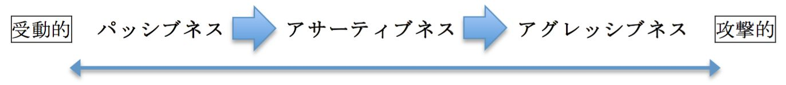
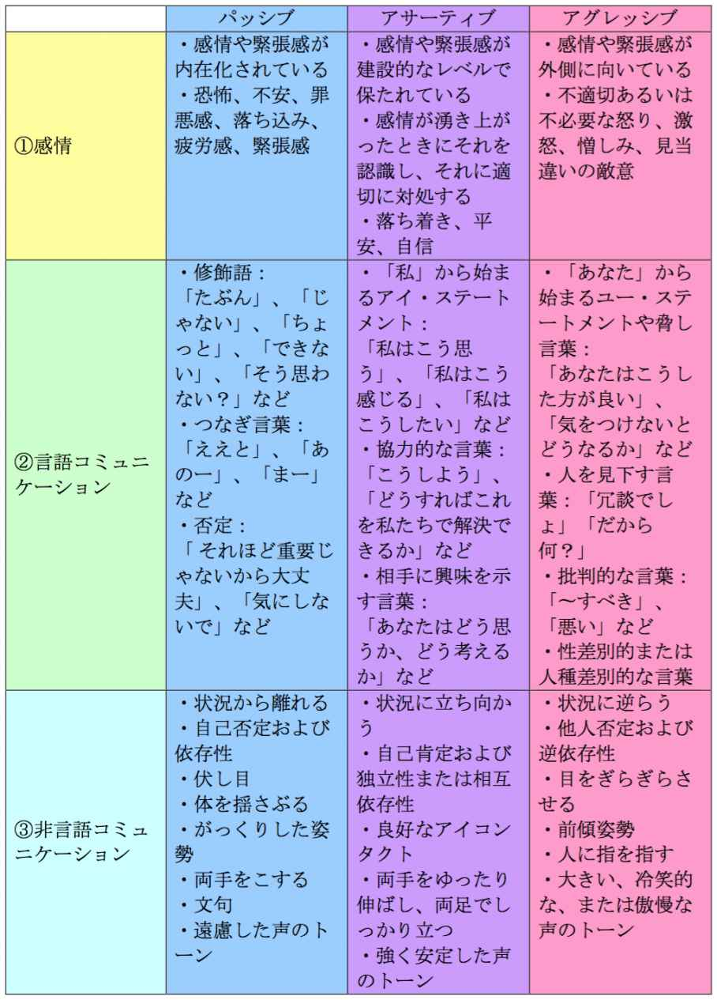

| アサーティブな思考と行動: 心が軽くなる!「自己表現」の方法 | |
| 中村 友彦 | |
| (2019) | |
中村 友彦
本電子書籍は、購入者個人の閲覧の目的のためにのみ、ファイルの閲覧が許諾されています。
私的利用の範囲を超える転載、配信、送信等の行為、並びに本作品の内容の複製、改変、改ざん等の行為は著作権法上、禁じられています。
本書の情報の理解、使用、実施等の行為の一切の責任は購入者にあり、この情報を使用または実施して損害が生じたとしても著者は一切の責任を負いません。
また、本書を購入者が受け取り閲覧することにより、購入者はこれらに同意したことになります。
本作品は横書きでレイアウトされています。
また、ご覧になる機種により、表示の差が認められることがあります。
この度は、本書をご購入いただき、誠にありがとうございます。
きっと本書を読んでいる方は、なかなか自分の気持ちを表現できない方、あるいは言いたいことを上手く言えずに損をしたり、イライラが溜まったりしている方が多いのではないかと思います。
そう感じているのは、あなただけではありません。多くの方が同じように悩んでいます。
しかし、もう言いたいことが言えずに悩むことはありません。それは、あなたは今、そんな自分という殻から脱出するための鍵を見出だそうとしているからです。
その鍵とは、「自己表現力」を向上することです。
なぜならば、相手に言いたいことを効果的に伝え、さらに相手とより良いコミュニケーションを取ったり関係性を築いたりするためには、健全な方法で自己表現をするスキルが不可欠だからです。
あなたが何も言わない限り、あるいは適切な言い方が分からない限り、誰もあなたが何を考えていたり感じたりしているか、分からないですよね。
そのため、自己表現力を高めることにより、効果的かつ健全な方法で自己表現や自己主張ができるだけでなく、自分の考えや気持ちを相手にしっかりと伝えることで、自分の気持ちが楽になるほか、あなたの周りの人たちにあなたの考えや気持ちが理解され、それにより人間関係が大きく改善されるなどの効果が得られます。
著者は、政府機関、海外企業、米国病院、米国大学院など、世界中の数々の場面において、アサーティブネスを実践してきました。
特に、米国病院では、スピリチュアルケアワーカーとして2,000人以上の患者様とご家族のケアに携わってきました。
医療の現場では、死を迎える方の看取りや、ご遺族へのグリーフケアをひとりひとりと向き合って行ってきました。
さまざまな人と関わり、未知のことが発生する臨床現場で、私はこの「アサーティブネス（Assertiveness、自己表現、自己主張）」を学び実践する上で、より効果的に自分の考えや気持ちを他者に伝える力が上がり、コミュニケーションにおけるストレスが減ったほか、劇的な人間関係の改善を実現することができました。
さらに、これまで、病院の職員に向けて、アサーティブネスについてのセミナーも行いました。
そして、その効果は職場や学校に留まることなく、今の私の物事の考え方や世界観にまで及び、気持ちや考えを効果的に相手に伝えることで、より気持ちの良い人生を送ることができています。
本書では、この「アサーティブネス」の理論と実践を通して、効果的に自己表現力と自己主張力を高める方法をご紹介いたします。
あなたの自己成長のプロセスにおいて、実際に本書の方法をお使いになってみて、ストレス解消や人間関係の改善にぜひ役立ててみてください。
➪「自分の気持ちや考えを伝えて、より良い人間関係を築く」
アサーティブネスとは、なかなか日本では聞き慣れない言葉かもしれません。
アサーティブネスは、英語でAssertivenessと言い、自己表現や自己主張などと訳されます。
しかし、その概念については、自己表現や自己主張という言葉では一括りにできないことも確かです。
したがって、本書では、アサーティブネスという言葉を採用しています。
アサーティブネスを端的に言えば、「ある人が、不安や恐れを不必要に感じることなく、自己のために立ち上がって行動し、また他者の権利を侵害することなく、自己の権利を主張するための言動」 のことを指します。1
そして、アサーティブな表現とは、「攻撃的」や「受動的」になることなく、自分の気持ちや考えを、率直かつ誠実に、相手に伝える方法 のことです。2
これは、日本国憲法第１１条でも保障されている「基本的人権」、つまり「個人の尊重」と「幸福追求権」をバックボーンとしています。
例えば、あなたが学校でのいじめや職場のパワハラなどに直面し、心身ともにひどくつらい状況にあるとします。
その場合、あなたが幸福を求めて生活をする権利や、他者から危害を受けない権利が、明らかに侵害されていると言えます。
そして、あなたに危害を加えているいじめっ子やパワハラをする上司に対し、何も言わず、そのままなされるがままにしてしまったら、ますます状況は悪化し、あなたのストレスはとても耐えられないものとなってしまいます。
しかし、あなた自身が自分のために立ち上がり、自分の気持ちを相手に伝え、自分の権利を主張することは、あなたの気持ちを楽にし、あなたのストレスを減らすほか、問題解決への糸口となり得ます。
そして、問題解決の先には、その相手との相互理解や人間関係の再構築が期待できます。
もちろん、自己表現や自己主張をしたからと言って、すべての問題が解決するわけではなく、ケース・バイ・ケースによります。
したがって、それでも解決しない場合は、適切な人や場所に相談したり情報共有したりすることが必要になります。
例えば、上記の例だと、いじめっ子やパワハラをする上司と直接話しても、相手が聞く耳を持たなかったり、状況が打開されなかったりする場合は、親や担任の先生に相談したり、あるいは組合や他の信頼できる上司に相談したりするべきでしょう。
しかし、まずあなたが自己表現や自己主張をすること、つまりあなた自身のために立ち上がることが、非常に重要になります。
それは、今後あなたが新たな問題に直面した時、自信を持って、より効果的に対処できるようになるためです。
アサーティブネスのバックボーンとなる基本的人権については、次章で詳しくお話しします。
Rafael Moreno-Rivas,Assertiveness Training for Pastors of the Methodist Church of Puerto Rico (D. Min dissertation for School of Theology, Boston University, 1999), 2, accessed July 4, 2019, https://tren-com.fuller.idm.oclc.org/e-docs/download2.cfm.⏎
Patricia Ann Green,The Power of Assertive Compassion (A paper submitted to the faculty in partial fulfillment for the degree of Doctor of Ministry, Ashland Theological Seminary, 2007), 25, accessed July 4, 2019, https://tren-com.fuller.idm.oclc.org/e-docs/download2.cfm.⏎
➪「自分を擁護するために、あなたは『存在』し、『行動』し、『所有』することができることを知る」
先述のように、すべての人は基本的人権を持っています。
これらの基本的人権は、尊重されるべきであり、それを侵害しようとする者あるいはすでにしている者に対しては、アサーティブネスを持って対応することが肝要です。
それでは、アサーティブネスに関する基本的人権とは、どのようなものがあるのでしょうか。
① 存在する権利
存在する権利とは、あなたが唯一無二の人間としてこの世に存在する権利、そしてあなた自身の個性や能力を表現し主張する権利のことです。
② 行動する権利
行動する権利とは、あなたが特定の活動に従事する権利のことです。
③ 所有する権利
所有する権利とは、あなたが特定のものを所有する権利のことです。1
Moreno-Rivas,Assertiveness Training , 31.⏎
これら３つの権利、つまり「存在」し、「行動」し、「所有」する権利を享受し行使できることを前提条件として、あなたは、以下のことをすることができます。
① 「ノー」と言える
罪悪感を感じたり、あなた自身が利己的であると感じたりすることなく、相手の要求に対して自信を持って「ノー」と言い、拒否することができます。
② 自分のニーズの重要性を理解する
あなた自身のニーズを不必要に卑下したり過小評価したりすることなく、他者のニーズと同等に重要なものであると位置づけることができます。
③ 自分の考えや気持ちを表現する
自分の考えや気持ちにフタをすることなく、健全かつ他者の権利を侵害することのない方法で、あなた自身の考えや感情を表現して相手に伝えることができます。1
Ibid., 27-28.⏎
具体例として、先述の学校でのいじめと会社でのパワハラの例を考えてみましょう。
あなたがもし、学校でいじめっ子またはそのグループにいじめられているとします。
そのいじめっ子は、あなたに、「何でお前なんか生きてるの？」、「早く死ね」と何度も言います。
あるいは、あなたが、会社で上司にパワハラを受けているとします。
その上司は、あなたに、「お前は使えない」、「お前なんか生きている意味などない」と何度も言います。
そのような辛辣な言葉を何度も聞いていると、あなたはそれがあたかも本当のことのように思ってしまうかもしれません。
「私など、生きている価値などない」というように。
しかし、そんな時、あなたは、どうかこれらの言葉が「嘘」であると信じてください。
なぜならば、あなたには生きる権利があるからです。
もっと言えば、あなたには生きる価値があるのです。
そして、誰にもそれを奪う権利はありません。
さらに、いじめっ子はあなたに「先生や親に言うな、言ったらどうなるか分かっているな」、パワハラ上司はあなたに「休む暇があったら寝る間も惜しんで働け」などと言ってきます。
このように、上下関係のある場面では、力や権限を乱用された時、恐怖で萎縮してしまい、思考回路が停止し、何も行動できなくなってしまうかもしれません。
「言ったら何をされるか分からない」というように。
しかし、あなたには、行動する権利があるのです。
あなたは、あなたの親や担任の教師、他に信じることができる大人、あるいは家族や勤務先の組合、法的機関に相談するなどの行動を選択できるのです。
また、いじめっ子はあなたの教科書や筆箱を取り上げたり、パワハラ上司はあなたに「有給休暇など取るな」と言ったりしてきます。
同様に、力関係や権限を乱用されることで怖くなり、何でも言われるがまま、なされるがままに従わざるを得ないように思ってしまうかもしれません。
「どうせ言っても何も変わらない」というように。
しかし、あなたには、所有する権利があるのです。
あなたは、自分の所有物や有給休暇を所有し享受することができるのです。
ここで重要なのは、これらの場面で、あなたが罪悪感を感じることなく、自信を持って相手に「ノー」と言って拒否すること、あなた自身のニーズが重要であると信じること、そしてあなた自身の考えや気持ちを率直かつ誠実にあなたの言葉で表現して相手に伝えることです。
もしかしたら、あなたは今、これらの「嘘」に攻撃され、苦しんでいるかもしれません。
しかし、どうか、あなたは大切な存在であること、あなたにはいくつかの行動の選択肢があること、そして誰にもあなたの所有物を奪う権利はないことを、心に留めてください。
➪「より建設的に自分の気持ちを表現して、より良い人間関係を築く」
これまで、自分の気持ちを相手に伝えるためには、アサーティブネスが最良のツールであること、またアサーティブネスには基本的人権の概念が強く結びついていることをお話ししてきました。
アサーティブネスをより深く理解するために、それと関連する大事な概念が２つあります。
それらは「パッシブネス」と「アグレッシブネス」です。
これら３つは、人の言動の積極性の度合いを分ける際に使われる表現です。
つまり、人の言動の積極性の度合いは、大きく「アサーティブネス（Assertiveness、自己表現・自己主張）」、「パッシブネス（Passiveness、受動性・消極性）」、「アグレッシブネス（Aggressiveness、攻撃性・積極性）」の３つに区別されます。
分かりやすく図にすると、以下のようになります。

まず、パッシブネスには以下の特徴があります。
・抑圧と不安を感じる
・自己を否定したり、謝罪したりする
・自己の決定を他人任せにする
・自己のニーズや欲望を無視あるいは軽視し、他者に自己を侵害させるのを許してしまう
・自己の望む目標を達成できなかったことに対する罪悪感や怒りを感じる1
➪したがって、受動的な人は、今よりアサーティブかつ積極的なコミュニケーションスキルを身につける必要があります。
Ibid., 2, 28.⏎
次に、アグレッシブネスには以下の特徴があります。
・自己中心的で、他者を無視あるいは軽視するような言動をする
・言い換えれば、他者を傷つけてまでも自己の目標を達成する
・他者の権利、考え、気持ちを無視したり否定したりする
・他者を圧倒し、脅かし、コントロールするような方法で自己の目的を実現する
・他者の誠実さと尊厳を侵害する1
➪したがって、攻撃的な人は、今より攻撃性の低いコミュニケーションスキルを身につけることが求められます。
Ibid., 1-2, 28.⏎
最後に、アサーティブネスには以下の特徴があります。
・不必要な不安を感じることなしに、自己のために行動し、立ち上がる
・他者の権利を侵害することなく、自己の権利を表現したり主張したりする
・相手の要求に「ノー」と言ったり、建設的に相手にお願いを要求したりする
・自己の必要な時に会話を始めたり、続けたり、終わらせたりする
・自己の肯定的および否定的な感情を、臆することなく表現する1
➪アサーティブネスは、それを実践するのが安全な環境（つまり、あなたを理解し受け入れてくれる人が周りにいる環境）で練習することにより、最大限に習得することができるスキルです。
Ibid., 2, 28.⏎
自分の積極性の度合いを知ることの重要性
ここまで、アサーティブネス、パッシブネス、アグレッシブネスの特徴を見てきました。
さて、あなたご自身を振り返ってみてください。
あなたの積極性の度合いはどのあたりにあるでしょうか？
どうぞ、アサーティブネス、パッシブネス、アグレッシブネスの違いを理解して、あなた自身がどこに当てはまるか、確認してみてください。
そして、自分がパッシブだと思う方はより積極的に、また自分がアグレッシブだと思う方は攻撃性の度合いを低くするようにしてみてください。
そうすることで、あなたは他者の権利を侵害することなく、より建設的に自分の気持ちが表現できるほか、よりバランスの取れた人間関係を築くことができます。
どんな人もみな、絶えず他者との関係の中で生きています。
それは、あなたも私も同じです。
世の中には、受動的でパッシブな人もいれば、人を絶えず攻撃するようなアグレッシブな人もいますし、適切な言動を適切な時に取ることができるアサーティブな人もいます。
どうか、この１週間であなたが実際に会い、話をした人たちを思い浮かべてください。
あなたの家族や友人、同僚など、あなたが話をした人であれば誰でも構いません。
それらのひとりひとりが持っている積極性の度合いがどれほどのものであったか、思い返してみてください。
そして、あなた自身が周りの人たちとどれほど積極的に関わってきたかについても、思い出してみてください。
言いたいことがあるのに言えずに悔しい思いをしたり（パッシブネス）、少し言い過ぎなのではと思うことを言われたり、あるいは言ってしまったり（アグレッシブネス）、または時宜にかなった言葉を率直かつ誠実にかけたり、かけられたり（アサーティブネス）したこともあるでしょう。
アサーティブネスを理解し実践することは、健全な人間関係の構築を促すほか、あなたがストレスを溜めずにより健康的に生きていくために必要なスキルを習得することにつながります。
次章では、パッシブネス、アグレッシブネス、アサーティブネスの違いやそれらを具体的に見分ける３つの方法、「感情」、「言語コミュニケーション」、「非言語コミュニケーション」について見ていきます。
➪「アサーティブな思考と行動を理解する」
パッシブネス、アグレッシブネス、アサーティブネスを見分ける３つの指標は、① 感情、② 言語コミュニケーション、③ 非言語コミュニケーションです。
まず、それぞれの特徴や具体例を表にまとめましたので、ご覧ください。

出典：Rafael Moreno-Rivas,Assertiveness Training for Pastors of the Methodist Church of Puerto Rico (D. Min dissertation for School of Theology, Boston University, 1999), 28-30, accessed July 4, 2019, https://tren-com.fuller.idm.oclc.org/e-docs/download2.cfm.
注：感情、言語コミュニケーションおよび非言語コミュニケーションは、積極性の度合いを認識するのに非常に役立ちますが、それらはあくまでも一般的な指標であり、決して行動をラベル付けするものではありません。
感情とは、あなたが感じる気持ちのことです。
緊張、不安、恐怖、落ち込み、疲労感などのパッシブなものから、怒り、憎しみ、敵意などのアグレッシブなもの、また、落ち着き、平安、自信などアサーティブなものなど、様々なものがあります。
そのほか、パッシブネスでは感情や緊張感が内在化されている、アサーティブネスではそれらが建設的なレベルで保たれ、感情が湧き上がった時に適切に対処できる、そしてアグレッシブネスでは感情や緊張感が外側に向いているなどの特徴があります。
言語コミュニケーションとは、読んで字のごとく、言葉を介して行うコミュニケーションのことです。
曖昧に濁すような言い方、自信に満ちた言い方、さらには人を見下したような言い方など、様々な方法で私たちは常に他者とコミュニケーションを取っています。
例えば、パッシブネスでは「たぶん」など濁す表現や「できない」などのネガティブな表現、アサーティブネスでは「私」から始まるアイ・ステートメントや「あなたはどう思うか、どう考えるか」など相手に興味を示す表現、そしてアグレッシブネスでは「あなた」から始まるユー・ステートメントや「だから何？」などの批判的な表現が特徴的です。
非言語コミュニケーションとは、言葉ではなく体の仕草などで表されるコミュニケーションのことです。
例えば、聞いたことを理解した時に首を縦に振って頷いたり、分からない時に首をかしげたりしますね。
あるいは、居心地が良い時には呼吸も穏やかですが、居心地が悪いと体を揺さぶったりするのではないでしょうか。
非言語コミュニケーションの一例として、ボディーランゲージがありますが、これは、身振りなどの体の動作を利用したコミュニケーションです。
そのほか、パッシブネスでは問題が発生した時にその状況から離れたり、自己否定したり、他者に依存したりする特徴、アサーティブネスではその状況に立ち向かったり、自己肯定したり、相互依存したりする特徴、そしてアグレッシブネスではその状況に逆らったり、逆依存したりする特徴がそれぞれあります。
➪「アサーティブな思考と行動を実践する」
アサーティブな思考とは、自信と自尊心を持ち、基本的人権を認識し、基本的人権に確信を持つことを指します。
Ａ 自信と自尊心を持つ
まず、あなたは人として価値があり、重要な存在であり、物事を行う選択をすることができることをしっかり認識しましょう。
自信と自尊心は、適切かつ建設的な方法で自分そして自分の権利を擁護するために必要な要素です。
Ｂ 基本的人権を認識する
あなたが自己主張をすることが必要な状況においては、あなた自身が持っている基本的人権を認識できる能力が必要になります。
なぜならば、自分に「人間としての尊重」と「幸福を追求する権利」があると認識できて、初めて自分のために立ち上がり、効果的な自己表現をすることができるからです。
あなたがあなた自身の基本的人権を認識することは、アサーティブな行動を取る上で、あなたの心と気持ちに平安をもたらしてくれます。
Ｃ 基本的人権に対する確信を持つ
ある状況において、あなたが認識しているあなた自身の権利は、誰も奪うことのできない、自分自身のものであると信じましょう。1
いったんこれらの権利を認識し、これらに確信を持つことができれば、自分を擁護して状況に立ち向かうための責任感と決意を持つことができます。
Ibid., 30-32.⏎
アサーティブな行動には、言語的、非言語的、認知的の３つの軸があります。
具体例については、前章の図を参考にしてみてください。
Ａ 言語的アサーティブネス
アサーティブにコミュニケーションを取るために使われる適切な言葉や言い方を習得しましょう。
例えば、以下の例が挙げられます。
・アイ・ステートメント（「私はこう思う」、「私はこう感じる」、「私はこうしたい」など）
・協力的な言葉（「では、こうしよう」、「どうしたら解決できるか」など）
・相手に興味を示す言葉（「あなたはどう思うか、どう考えるか」など）
私たちは、日常において、主に話し言葉でコミュニケーションを取っています。
したがって、アサーティブな言い方や表現を身につけることは、他者とのより良いコミュニケーションを築くことにつながります。
Ｂ 非言語的アサーティブネス
アサーティブなコミュニケーションには、非言語での表現も用いられます。
言葉だけでなく、これらの非言語の表現もまた習得しましょう。
例えば、以下の例が挙げられます。
・アイコンタクト
・表情
・体の姿勢と動き
・人との距離などの視覚的要素
・声の大きさやトーン
・流暢さ
・スピードとリズム
また、時に、話し言葉と非言語のメッセージが矛盾し、受け手を混乱させることがあります。
例えば、ある映像を無声で見た時、そこには２人の人がいて、１人は怒った顔をして、もう１人は笑顔だとします。
あなたは、映像から、最初の人が怒っていて、次の人が嬉しがっていると推測するでしょう。
しかし、２回目に同じ映像を音声とともに見た時、最初の怒った顔をしている人は、「今日は楽しいな」と言っていて、もう１人の笑顔の人は、「今日は最悪だ」と言っているとします。
それを見たあなたは、混乱してしまうことでしょう。
なぜならば、ここにはコミュニケーションの乖離があり、言語と非言語のコミュニケーションに一貫性がないからです。
したがって、あなたが誰かとコミュニケーションをする際、相手に自分の意図や気持ちを適切に伝えるためには、自分の言語メッセージと非言語メッセージに一貫性があることが非常に重要になります。
Ｃ 認知的アサーティブネス
アサーティブなコミュニケーションには、認知レベルでの行動も必要になります。
例えば、自己主張が必要な状況においては、あなたが適切で合理的かつ現実的な考えをしたり選択をしたりする意識を持つことが重要です。
言い換えれば、これは、あなたが非合理的または非生産的な考えを認識し、それを拒絶し、より合理的または生産的な考えに置き換えることを意味します。1
あなたがこれらの思考を脳内で動的に行うことができた時、初めてあなたは認知レベルでアサーティブネスを実践できたことになるのです。
これらの言語的、非言語的、認知的アサーティブネスをバランス良く実践することが、包括的かつアサーティブな行動をとることにつながります。
Ibid., 32-33.⏎
ここまで、アサーティブな思考と行動をいかに実践するかについてお話ししてきました。
ここからは、それらを具体的な日々の行動にどう落とし込むかをご紹介します。
それは非常に簡単です。
まず、アサーティブな思考の３要素（自信・自尊心、基本的人権の認識、基本的人権に対する確信）と、アサーティブな行動の３要素（言語的、非言語的、認知的行動スキル）をそれぞれ別々に実践してみてください。
そして、すべての要素を１つの総合的かつアサーティブな言動として統合し、あなたの家族、友人、同僚との日々の関わりの中で、実際にこれを実践してみてください。
また、それを日記などの紙に書いて、後で読み返せるようにしてください。
これと言った書き方はありませんが、その日にどうアサーティブネスを実践できたか、あるいは実践すべき時にそうできなかったか、またそれらの時にどういう気持ちになったか、どうすべきだったかなどを書き留めてみると良いかもしれません。
そして、１ヶ月ほど経ったら、あなたの日記を読み返してみましょう。
その日ごとに、アサーティブになれた日や、そうなれなかった日、またそれぞれどう感じたか、どうすべきだったかを確認しましょう。
こうして自分の言動を振り返ってみることにより、次への新たな行動が生まれてきますし、ひいてはあなたがより健康的に生き、他者とのより良いコミュニケーションを築くことにつながります。
アサーティブネスとは、「自分の気持ち」を伝える最良のツールであり、あなたの人生を劇的に変える力を秘めています。
そして、その思考と行動は、トレーニングをすることによって、誰もが実践できるものです。
あらためて、アサーティブネスの重要ポイントとその目的を列挙します。
① アサーティブネスの中核は基本的人権
➪「自分を擁護するために必要な『存在』『行動』『所有』の３つの権利を知る」
② アサーティブネスは言動の積極性を表す
➪「より建設的に自分の気持ちを表現して、より良い人間関係を築く」
③ 積極性の度合いを見分ける３つの方法
➪「アサーティブな思考と行動を理解する」
④ アサーティブネスの実践
➪「アサーティブな思考と行動を実践する」
これらを認識し、思考と行動を実践することにより、あなたの気持ちや考えを他者に効果的に伝えるトレーニングをすることができるのです。
ここまで、効果的に自己表現をする方法「アサーティブネス」をご紹介してきましたが、いかがでしたでしょうか？
社会で他者と関わっていく上で、色々な場面において、自己表現や自己主張の概念が重要であること。
そして、アサーティブな思考と行動を意識して実践していくことによって、効果的に自己表現や自己主張ができるだけでなく、より効果的に他者と関わり合い、あなたの周りの人たちにあなたの考えや気持ちが理解され、それにより人間関係が大きく改善されることをご理解いただけたのではないでしょうか。
若い時、特に20代や30代の多くが経験する社会人生活、恋愛、家族・友人関係などの数ある場面で、時には言いたいことが上手く言えなかったり、人間関係に悩んだりすることもあるかもしれません。
しかし、たとえそんな時でも、アサーティブネスを実践すれば、あなたの周りの人たちにあなたの気持ちや考えが理解されてくるものです。
そして何よりも、あなた自身がより建設的に自己表現をし、気持ちよく生きていくことができるようになります。
ですから、あなたが壁にぶち当たったり悩んだりした際、アサーティブかつ率直にあなたの考えや気持ちを周りの人に伝える努力をしてほしいと思います。
もちろんその悩みを著者に相談していただければ嬉しく思います。
悩みだけではなく、勇気が出ずに今一歩言いたいことが大事な人に言えないという人や、勇気が出ないという人なども、下記HPからお気軽にご相談ください。
あなたが自分の気持ちや考えを効果的に表現し、心を軽くし、より良い人間関係を築いていけることを心からお祈りしています。
本書を最後までお読みいただき、ありがとうございました。
Green, Patricia Ann.The Power of Assertive Compassion . A paper submitted to the faculty in partial fulfillment for the degree of Doctor of Ministry, Ashland Theological Seminary, 2007. Accessed July 4, 2019. https://tren-com.fuller.idm.oclc.org/e-docs/download2.cfm.
Moreno-Rivas, Rafael.Assertiveness Training for Pastors of the Methodist Church of Puerto Rico . D. Min dissertation for School of Theology, Boston University, 1999. Accessed July 4, 2019. https://tren-com.fuller.idm.oclc.org/e-docs/download2.cfm.
あらためて、この度は本書をご購入いただき誠にありがとうございました。
最後に、「レビューの記入」をしていただけましたら大変励みになりますので、ぜひよろしくお願いします。
今後とも何卒よろしくお願い申し上げます。
中村 友彦
KARIS翻訳サービス 代表。
英語翻訳家、英語講師、作家。
上智大学グリーフケア研究所推薦、日本スピリチュアルケア学会認定スピリチュアルケア師。
外務省専門調査員として2年間の通訳・翻訳業務、大手造船システム会社翻訳担当として3年間の翻訳業務に従事。
アメリカの病院でスピリチュアルケアワーカーとして延べ2,000人超の患者様とご家族にケアを提供。
英語学習者をサポートするウェブサイト「Tomo's English Café 」を運営、延べ8,000人以上が利用。
米国フラー神学大学院神学修士課程修了。
英国ウォーリック大学大学院国際関係学修士課程修了。
英検1級、TOEIC965、IELTS7.5、国連英検A級。
主な著書：『英語力アップ厳選トレーニング20選』（Amazon「翻訳」部門ベストセラー1位、2019年1月）、『3ヶ月で突破 TOEIC(R) L&Rテスト900点! 5つの戦略』（Amazon「翻訳」部門ベストセラー1位、2019年3月）、『HELLIQ、METIQ、ISPEに所属する 天才の7つの習慣』（Amazon「リーダーシップ・自己啓発」部門ベストセラー1位、2019年4月）『20代で逆境を越える100の言葉』、『セルフコーチング』
翻訳・心のケアに関するお仕事のご依頼やご相談はこちらから：KARIS翻訳サービス
また、ココナラ でも翻訳・心のケアのサービスを提供しております。実績やご依頼者様の声などの詳細は、こちらをご覧ください。
Amazonでの著書一覧ページはこちら
英語力アップ厳選トレーニング20選: 自分に合った英語学習法を見つけたい人におすすめ!（翻訳のプロが伝授するシリーズ）
3ヶ月で突破 TOEIC(R) L&Rテスト900点! 5つの戦略（翻訳のプロが伝授するシリーズ）
HELLIQ、METIQ、ISPEに所属する 天才の7つの習慣: 今からでも知能が高まる「習慣化の法則」
【スピリチュアルケア実績】
患者様への寄り添いと傾聴、最期を迎える患者様の看取り、ご遺族へのグリーフケア、自殺願望・うつ病・リストカットに苦しむ精神病患者へのケア、オンコール対応、集中治療室（ICU)・緊急治療室（ED)・精神科病棟担当、ジョハリの窓・逆視点・アサーティブネスに関する講演など
【翻訳・通訳実績】
UCLA経済会議報告書、政府要人の通訳、シンクタンク資料、ロサンゼルス・タイムズ記事、テレビ番組のスクリプト、大手造船システム、ソフトウェア技術マニュアル、英文ビジネスメール、学術論文、大学の志望理由書、電子書籍、履歴書、不動産登記簿、賃貸契約書、医療文書、病院の紹介状、企業報告書、労働条件書、NDA、プライバシーポリシー、美容室メニュー、企業ウェブサイト、企業案件プレゼン、企業紹介ビデオ、英語の動画、文字起こし、小説、歌詞など
おかげさまで、これまで200以上の個人、法人、団体とお取引きいただいています。
ご不明な点などございましたら、当HP からお気軽にお問い合わせください。